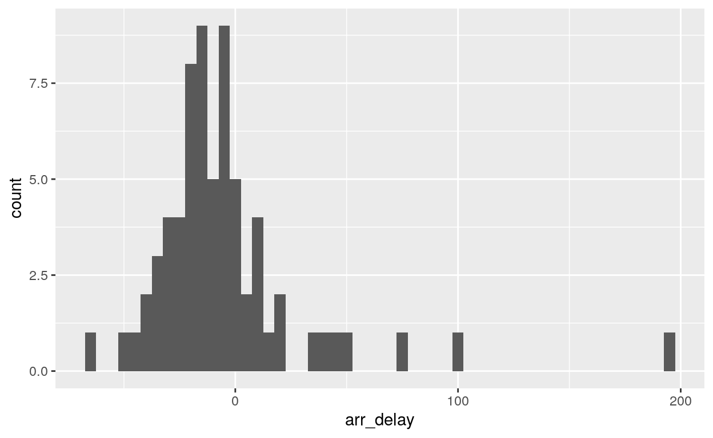
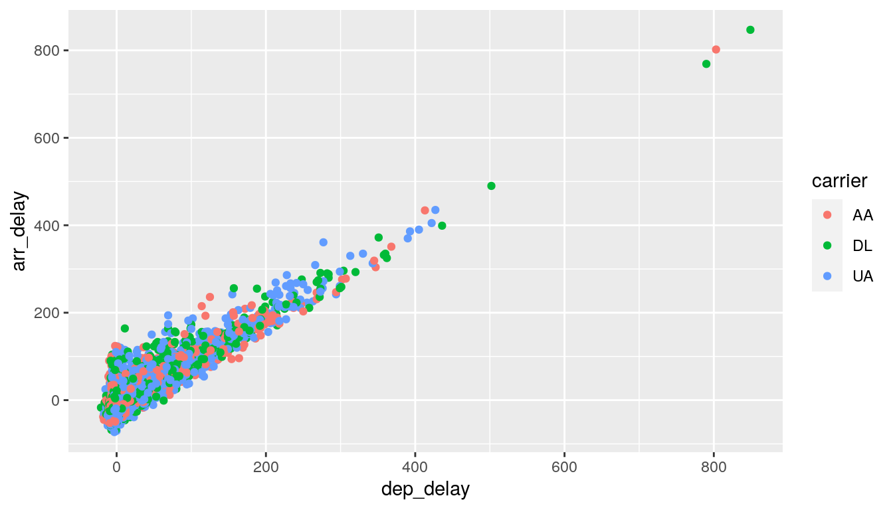

In this lab we will explore a random sample of domestic flights departing from the three major New York City airports in 2013. We will generate simple graphical and numerical summaries of data on these flights and explore delay times.
Packages include reusable functions, the documentation that describes how to use them, and sample data. In this lesson we will make use of two packages:
tidyverse: Tidyverse is a collection of R packages for data science that adhere to a common philosophy of data and R programming syntax, and are designed to work together naturally. You can learn more about tidyverse here.
openintro: The openintro package contains datasets used in openintro resources. You can find out more about the package here.
Once we have installed the packages, we use the library() function to load packages into R.
Let’s load these two packages to be used in the remainder of this lesson.
library(tidyverse)
library(openintro)The Bureau of Transportation Statistics (BTS) is a statistical agency that is a part of the Research and Innovative Technology Administration (RITA). As its name implies, BTS collects and makes transportation data available, such as the flights data we will be working with in this lab. The description of the dataset is available at https://www.openintro.org/data/index.php?data=nycflights.
First, we’ll view the nycflights data frame. Type the following in your console to load the data:
data(nycflights)The data are organized in what we call a data frame, where each row represents an observation or a case and each column represents a variable. For this data set, each observation is a single flight.
To view the first few rows of the data.
head(nycflights)This returns the names of the variables in this data frame. The codebook (description of the variables) can be accessed by pulling up the help file:
?nycflightsWhen you first start working with a dataset, it’s good practice to take a note of its dimensions; how many rows or observations and how many columns or variables the data frame has.
## [1] 32735 16The output of dim() tells us that the data frame includes 32,735 observations (rows) and 16 variables (columns).
We can use glimpse function (in the tidyverse package) to take a quick peek at your data to understand its contents better.
glimpse(nycflights)The glimpse function lists the variables and their types, along with values of the first few observations. Here are some of the data types in R:
One of the variables refers to the carrier (i.e. airline) of the flight, which is coded according to the following system.
carrier: Two letter carrier abbreviation.
9E: Endeavor Air Inc.AA: American Airlines Inc.AS: Alaska Airlines Inc.B6: JetBlue AirwaysDL: Delta Air Lines Inc.EV: ExpressJet Airlines Inc.F9: Frontier Airlines Inc.FL: AirTran Airways CorporationHA: Hawaiian Airlines Inc.MQ: Envoy AirOO: SkyWest Airlines Inc.UA: United Air Lines Inc.US: US Airways Inc.VX: Virgin AmericaWN: Southwest Airlines Co.YV: Mesa Airlines Inc.A very common operation on categorical variables is frequency distribution. One method is table() function. Let’s explore the number of observations which are spam (coded as 1) and non-spam (coded as non-spam).
Let’s check the frequency distribution of the carrier in the dataset.
##
## 9E AA AS B6 DL EV F9 FL HA MQ OO UA US VX WN YV
## 1696 3188 66 5376 4751 5142 69 307 34 2507 3 5770 2015 497 1261 53We’ll practice on another dataset, email, which contains a subset of incoming emails for the first three months of 2012 for a single email account. The description of the dataset is available at https://www.openintro.org/data/index.php?data=email.
Exercise: Use the dim() function for retrieving the dimension (number of rows and columns) of the email dataframe.
Question 1:
Question 2:
Exercise: Take a peek at the email dataset using the glimpse() function.
Here are some of the varaibles in the data set.
spam is a categorical variable indicating whether or not the email is spam.This was created by reading through each email individually and deciding if it looked like spam or not.to_multiple is TRUE if the email was addressed to more than one recipient and FALSE otherwise.image is the number of images attached in the email.Let’s explore the number of observations which are spam (coded as 1) and non-spam (coded as non-spam) using the table function.
table(email$spam) We use the ggplot() function to build plots. If you run the plotting code in your console, you should see the plot appear under the Plots tab of the lower right panel of RStudio. If you run the chunk, the plot will appear beneath the code chunk.
With ggplot():
aesthetic elements of the plot, e.g. the x and the y axes.+ to specify the geometric object for the plot. Since we want to scatterplot, we use geom_point().For instance, if you wanted to visualize the above plot using a line graph, you would replace geom_point() with geom_line().
Let’s start by examing the distribution of departure delays of all flights with a histogram.
ggplot(data = nycflights, aes(x = dep_delay)) +
geom_histogram()This function says to plot the dep_delay variable from the nycflights data frame on the x-axis. It also defines a geom (short for geometric object), which describes the type of plot you will produce.
Histograms are generally a very good way to see the shape of a single distribution of numerical data, but that shape can change depending on how the data is split between the different bins. You can easily define the binwidth you want to use:
# create histogram with bindwidth of 15
ggplot(data = nycflights, aes(x = dep_delay)) +
geom_histogram(binwidth = 15)
# create histogram with bindwidth of 150
ggplot(data = nycflights, aes(x = dep_delay)) +
geom_histogram(binwidth = 150)Look carefully at these three histograms. How do they compare?
The %>% operator is called the piping operator. It takes the output of the previous expression and pipes it into the first argument of the function in the following one. To continue our analogy with mathematical functions, x %>% f(y) is equivalent to f(x, y).
If you want to visualize only on delays of flights headed to Los Angeles, you need to first filter the data for flights with that destination (dest == "LAX") and then make a histogram of the departure delays of only those flights.
lax_flights <- nycflights %>%
filter(dest == "LAX")
ggplot(data = lax_flights, aes(x = dep_delay)) +
geom_histogram()Consider the following statement.
lax_flights <- nycflights %>%
filter(dest == "LAX")We can read these two lines of code as the following: *“Take the nycflights dataset and pipe it into the filter function. Filter the nycflights data set so that we only have rows where the destination is LAX.
Let’s decipher these two commands (OK, so it might look like four lines, but the first two physical lines of code are actually part of the same command. It’s common to add a break to a new line after %>% to help readability).
nycflights data frame, filter for flights headed to LAX, and save the result as a new data frame called lax_flights.
== means “if it’s equal to”.LAX is in quotation marks since it is a character string.ggplot call from earlier for making a histogram, except that it uses the smaller data frame for flights headed to LAX instead of all flights.Logical operators: Filtering for certain observations (e.g. flights from a particular airport) is often of interest in data frames where we might want to examine observations with certain characteristics separately from the rest of the data. To do so, you can use the filter function and a series of logical operators. The most commonly used logical operators for data analysis are as follows:
== means “equal to”!= means “not equal to”> or < means “greater than” or “less than”>= or <= means “greater than or equal to” or “less than or equal to”Note: A common mistake is not using the double equal signs.
destdest match ‘LAX’?”.You can also obtain numerical summaries for these flights:
lax_flights %>%
summarise(mean_dd = mean(dep_delay),
median_dd = median(dep_delay),
n = n())Note that in the summarise function you created a list of three different numerical summaries that you were interested in.
mean_dd, median_dd, nn() reports the sample size.summarize() instead of summarise() if you prefer that spelling.Summary statistics: Some useful function calls for summary statistics for a single numerical variable are as follows:
meanmediansdvarIQRminmaxNote that each of these functions takes a single vector as an argument and returns a single value.
You can also filter based on multiple criteria. Suppose you are interested in flights headed to San Francisco (SFO) in February:
sfo_feb_flights <- nycflights %>%
filter(dest == "SFO", month == 2)Note that you can separate the conditions using commas (or “&”) if you want flights that are both headed to SFO and in February. If you are interested in either flights headed to SFO or in February, you can use the | instead of the comma. (This is located above the backslash.)
Create a new data frame that includes flights headed to SFO in June, and save this data frame as sfo_june_flights.
___ <- ___ %>% ___(dest == ___, month == ___)sfo_june_flights <- nycflights %>% filter(dest == "SFO", month == 6)How many flights meet these criteria? Hint: How many rows are in sfo_june_flights? To learn what a function does and its arguments that are available to you, use the “Help” tab in the bottom right. Try this for dim and nrow.
dim(___)
nrow(___)dim(sfo_june_flights)
nrow(sfo_june_flights)Another useful technique is quickly calculating summary statistics for various groups in your data frame. For example, we can modify the above command using the group_by function to get the same summary stats for each origin airport:
sfo_feb_flights %>%
group_by(origin) %>%
summarise(median_dd = median(dep_delay), iqr_dd = IQR(dep_delay), n_flights = n())Here, we first grouped the data by origin and then calculated the summary statistics.
Calculate the median and interquartile range for arr_delay of flights in the sfo_feb_flights data frame, grouped by carrier.
___ %>%
___(___) %>%
___(median_dd = ___(___), iqr_dd = ___(___))sfo_feb_flights %>%
___(___) %>%
summarise(median_dd = ___(arr_delay), iqr_dd = ___(arr_delay))sfo_feb_flights %>%
group_by(carrier) %>%
summarise(median_dd = median(arr_delay), iqr_dd = IQR(arr_delay))Suppose you will be flying out of NYC and want to know which of the three major NYC airports has the best on time departure rate of departing flights. Also supposed that for you, a flight that is delayed for less than 5 minutes is basically “on time.”” You consider any flight delayed for 5 minutes of more to be “delayed”.
In order to determine which airport has the best on time departure rate, you can
Let’s start with classifying each flight as “on time” or “delayed” by creating a new variable with the mutate function.
nycflights <- nycflights %>%
mutate(dep_type = ifelse(dep_delay < 5, "on time", "delayed"))The first argument in the mutate function is the name of the new variable we want to create, in this case dep_type. Then if dep_delay < 5, we classify the flight as "on time" and "delayed" if not, i.e. if the flight is delayed for 5 or more minutes.
Note that we are also overwriting the nycflights data frame with the new version of this data frame that includes the new dep_type variable.
We can handle all of the remaining steps in one code chunk:
nycflights %>%
group_by(origin) %>%
summarise(ot_dep_rate = sum(dep_type == "on time") / n()) %>%
arrange(desc(ot_dep_rate))Answer in an Rmd file based on the lab report template.
Suppose you really dislike departure delays and you want to schedule your travel in a month that minimizes your potential departure delay leaving NYC. One option is to choose the month with the lowest mean departure delay. Another option is to choose the month with the lowest median departure delay. What are the pros and cons of these two choices?
The nycflights data frame is a massive trove of information. Pick one of the following questions and tell me which R functions you would use to investigate the question.
Hint Example: Which month would you expect to have the highest average delay departing from an NYC airport?
Let’s think about how you could answer this question:
group_by months, thensummarise mean departure delays.arrange these average delays in descending ordernycflights %>%
group_by(month) %>%
summarise(mean_dd = mean(dep_delay)) %>%
arrange(desc(mean_dd))
nycflights dataset and replicate the following plot. Hint: The data frame plotted only contains flights from American Airlines, Delta Airlines, and United Airlines, and the points are colored by carrier. Once you replicate the plot, determine (roughly) what the cutoff point is for departure delays where you can still expect to get to your destination on time.
You may want to refer to the ggplot cheatsheet and the dplyr cheatsheet.